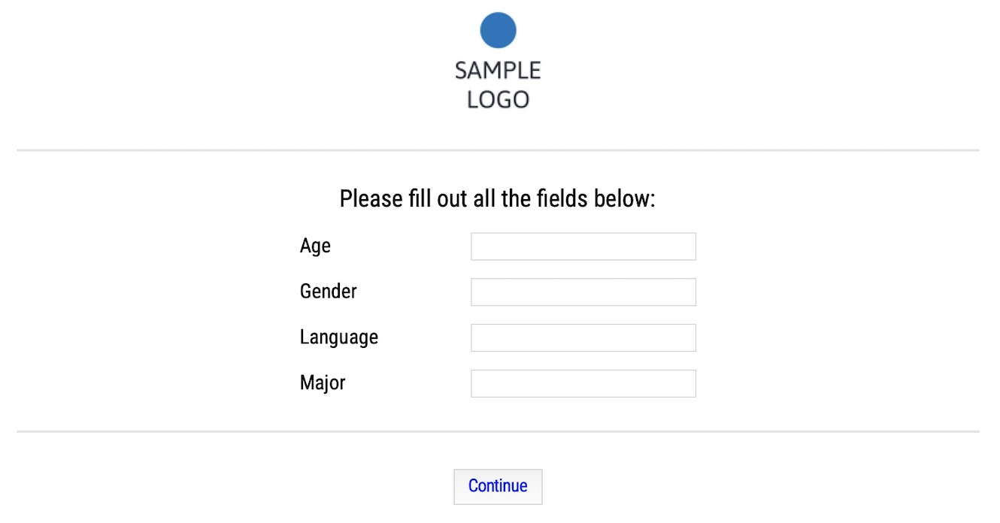

The following description is taken directly from the README of the associated Github page. This is one of my ongoing side projects: an experiment script with Python 3 using tkinter. The scope of this effort is fairly limited for now:

To run the experiment, simply adjust the settings in config.yaml (or any other yaml file of your choosing with the relevant settings) and add your item files to the mix before running experiment.py. The experiment should then run as specified (barring any code blunders on my part). Alternatively, if you just want to have a look at the way everything works and looks, you can simply run it as-is; a wide variety of exemplary item lists and items is provided (and used for testing purposes).
my_exp = Experiment("config.yaml")
my_exp.start_experiment()In order to display the experiment, tkinter is used (unfortunately, so far, I have only tested this script on Mac OS, but I do hope that this should not be a problem), internal data handling and exporting is accomplished with pandas, while anything relating to audio files relies on pygame.
Here are the first few lines of the results for a Forced Choice experiment, where the finished-column indicates whether the entire set of items was completed or not:
| id | date | start_time | tester | age | gender | language | major | sub_exp | item | cond | judgment | reaction_time | finished | feedback | duration |
|---|---|---|---|---|---|---|---|---|---|---|---|---|---|---|---|
| uuvvomdbmam9fzc | 04/03/2020 | 11:46:54 | TEST | 99 | n/a | python | none | 1 | 1 | a | opt1 | 1.48082 | F | cool exp | 10.2 |
| uuvvomdbmam9fzc | 04/03/2020 | 11:46:54 | TEST | 99 | n/a | python | none | 1 | 3 | b | reject | 0.9502 | F | cool exp | 10.2 |
| uuvvomdbmam9fzc | 04/03/2020 | 11:46:54 | TEST | 99 | n/a | python | none | 1 | 2 | a | opt2 | 0.88746 | F | cool exp | 10.2 |
| uuvvomdbmam9fzc | 04/03/2020 | 11:46:54 | TEST | 99 | n/a | python | none | 1 | 4 | b | opt1 | 1.14362 | F | cool exp | 10.2 |
As you can see, the results file is fairly dense and errs on the side of including too much information. I find this makes things easier in case unexpected circumstances occur or testing is done under non-ideal conditions (long stretch of time to test all participants; lots of different experimenters doing the testing, what have you).